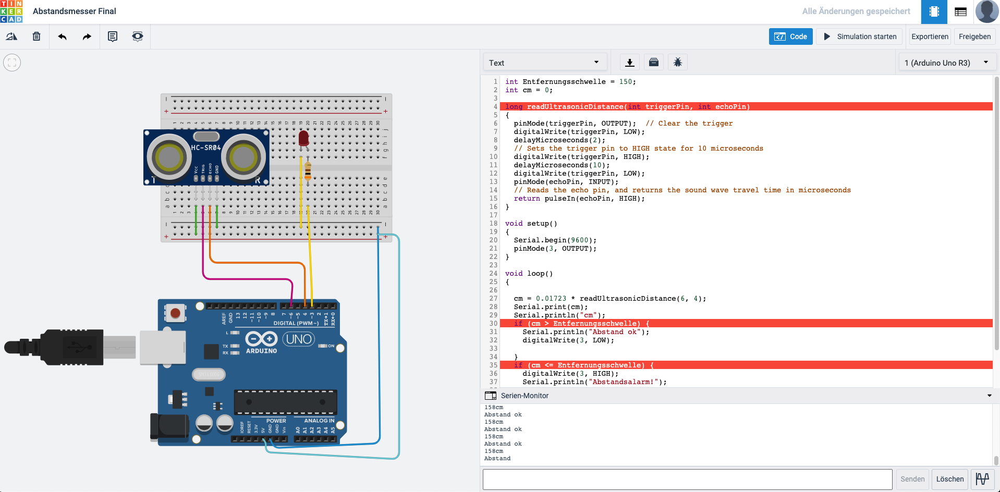

ARDUINO - CORONA DISTANCE WARNING SYSTEM
Grobkonzept
Zunächst sollten wir ein Grobkonzept auf Papier erstellen. Da ich mich mit Arduino nicht seh gut auskenne, habe ich allerdings damit gestartet mir das Tool "Thinkercad" anzusehen und zu verstehen.
Als ich einen Überblick über die Funktionen bekommen habe, habe ich mich an einen Prototypen gemacht.

Ansatz eines funktionalen Prototypen
Nach etwas herumprobieren und einigen Lektionen, habe ich direkt gestartet mich mit dem Ultraschall-Abstandssensor zu beschäftigen. Nach dem Anschluss eines Abstandssensors und dem Verbinden mit dem Arduino, fügte ich noch eine kleine rote LED hinzu.
Im nächsten Schritt habe ich mich mit dem Code auseinandergesetzt. Ich habe zunächst Zentimeter (cm) und die Entfernungsschwelle als Variablen definiert. Die Entfernungsschwelle habe ich hier auf 150 cm gesetzt (1,5 m Mindestabstand).
Mit "readUltrasonicDistance" konnte ich den Abstand zu einem Objekt ausgeben lassen und in Zentimeter umrechnen lassen.
Danach habe ich festgelegt: Wenn die aktuellen Entfernung (cm) die Entfernungsschwelle überschreitet, dann bleibt die Lampe aus: Abstand ok. Wenn die aktuelle Entfernung die Entfernungsschwelle unterschreitet, dann geht die Lampe an: Abstandsalarm!